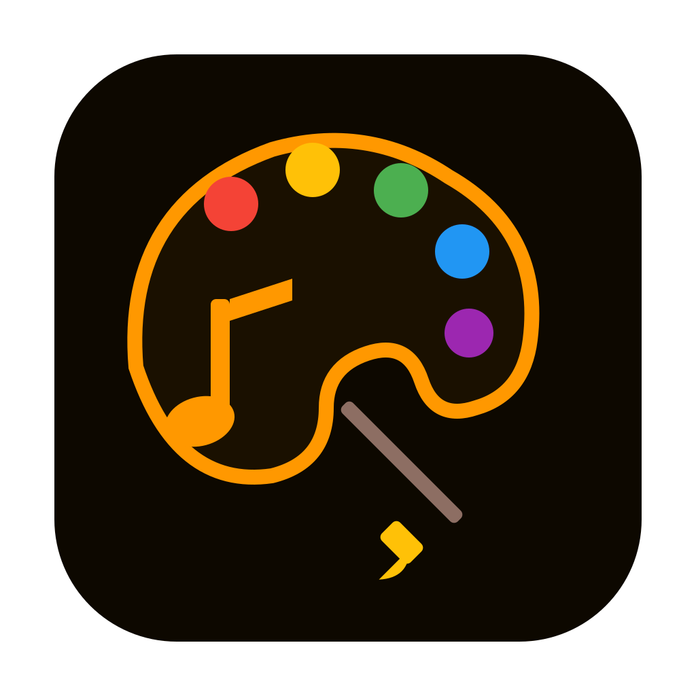
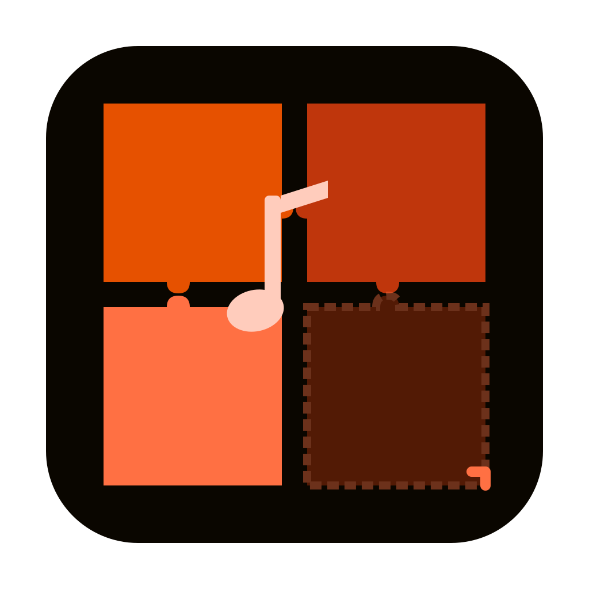
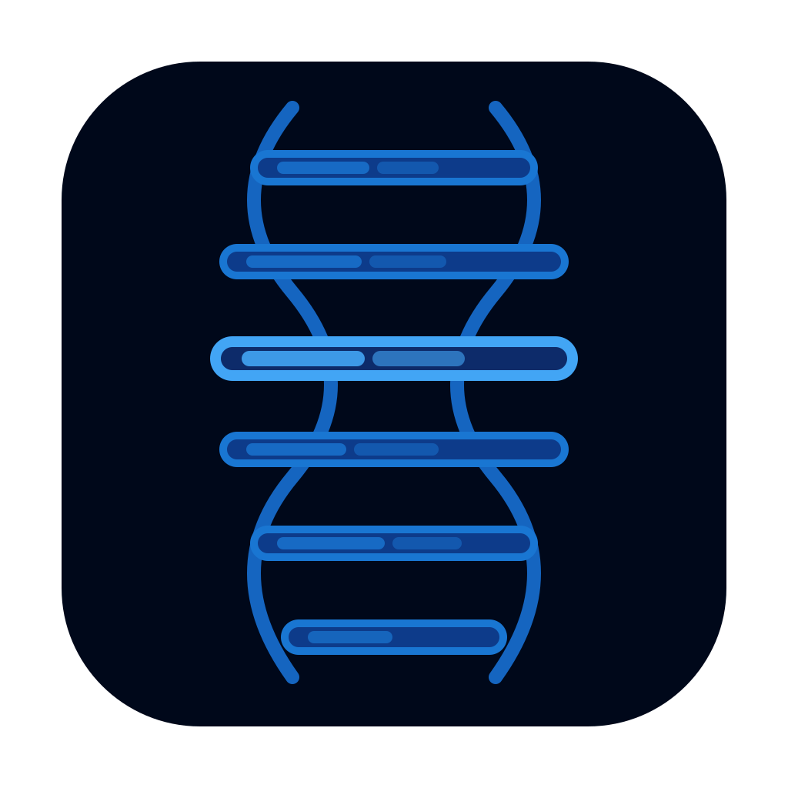
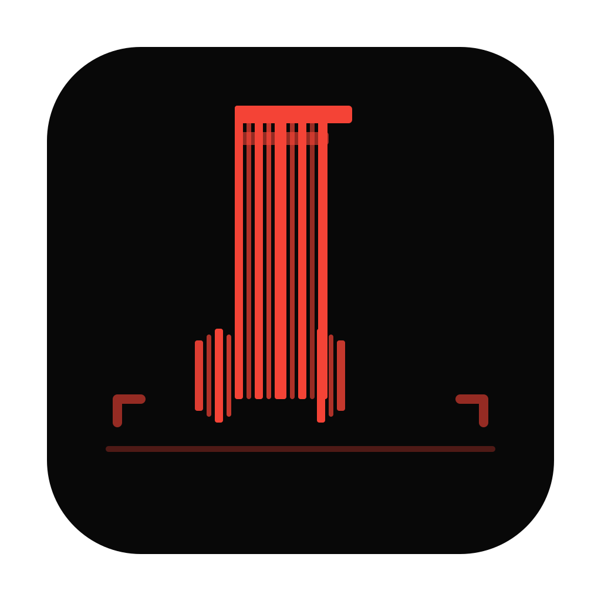
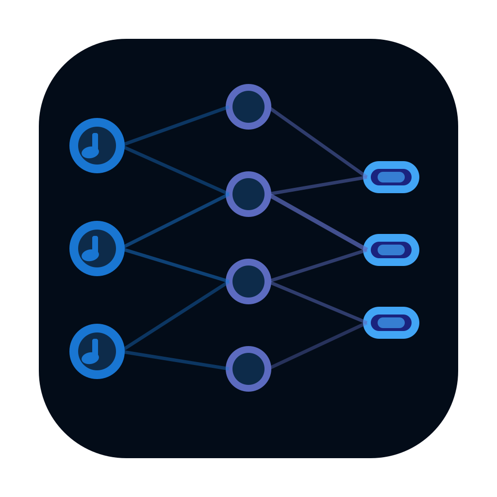

Candidate_20260319_2249 | WPF 오디오 태그 편집기 (MusicBrainz, ID3 자동 완성)
1차 Candidate_20260319 와 완전히 다른 컨셉 — 지문 / 팔레트 / 서랍장 / 마법봉 / 퍼즐 / DNA / 신경망 등

icon_02.svg팔레트로 음표 채색
icon_05.svg퍼즐 앨범아트 조립
icon_07.svg태그 DNA 이중나선
icon_08.svg바코드 음표 스캔
icon_09.svg신경망 자동 태깅